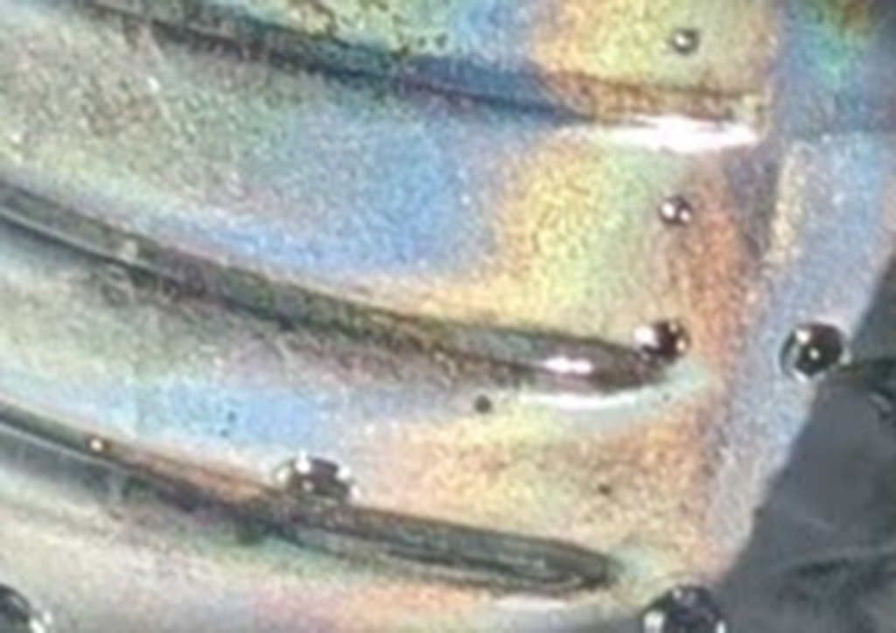
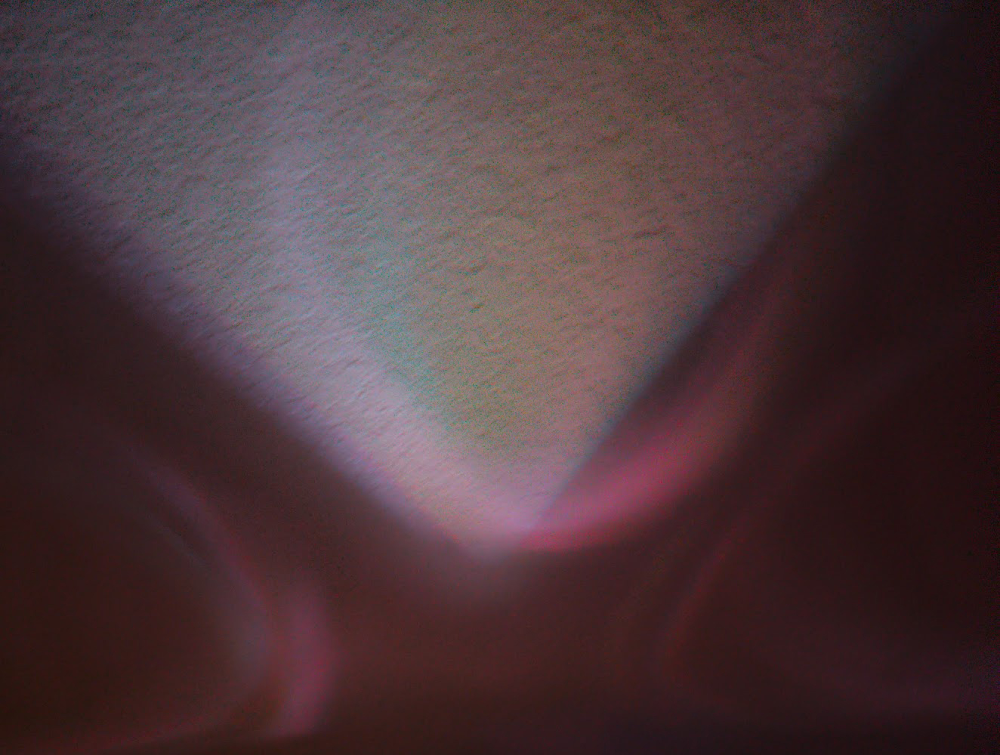
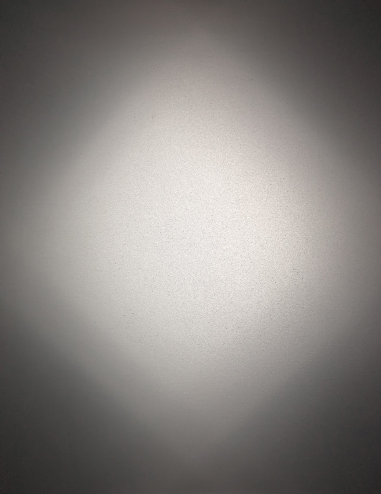
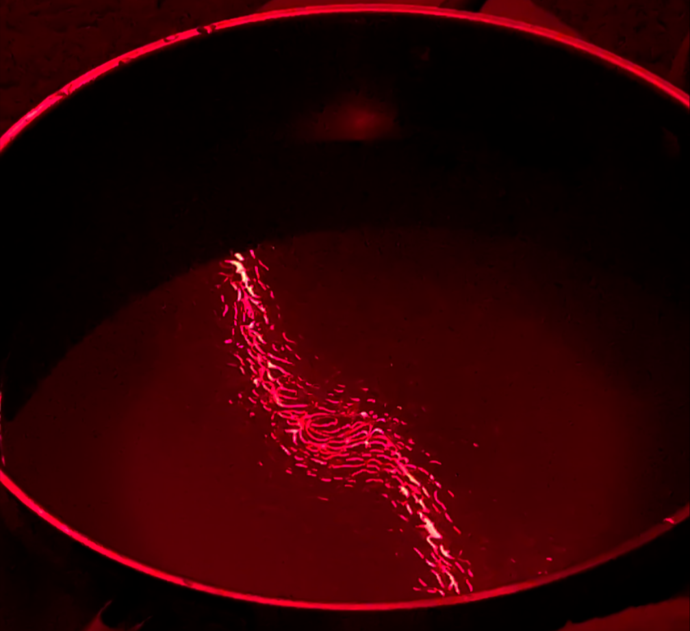
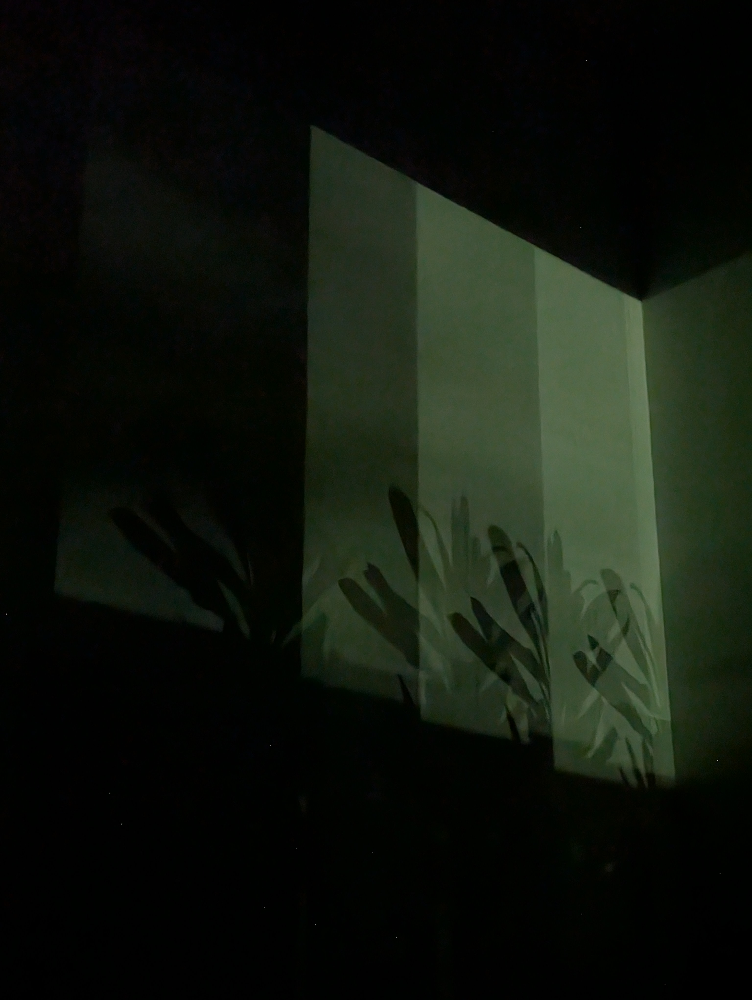
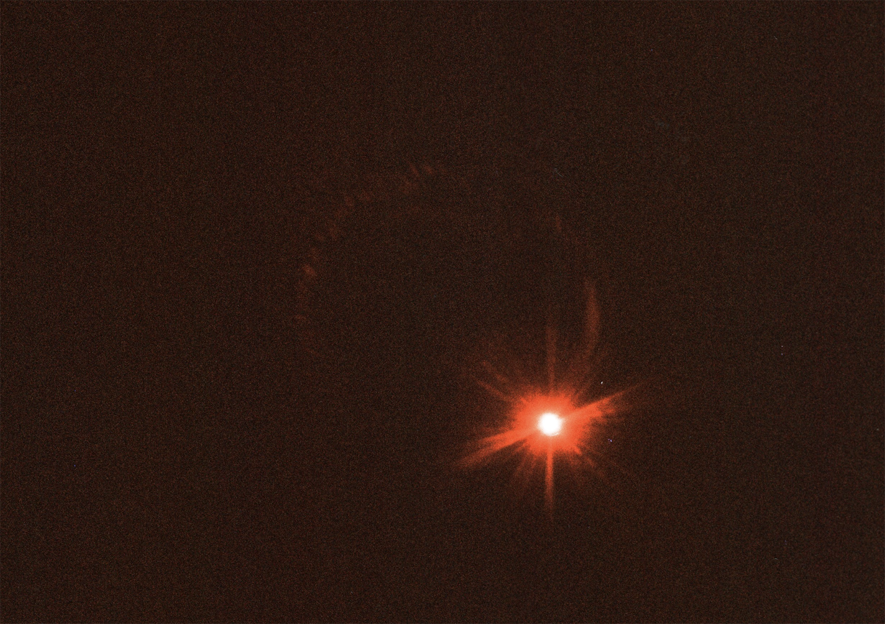
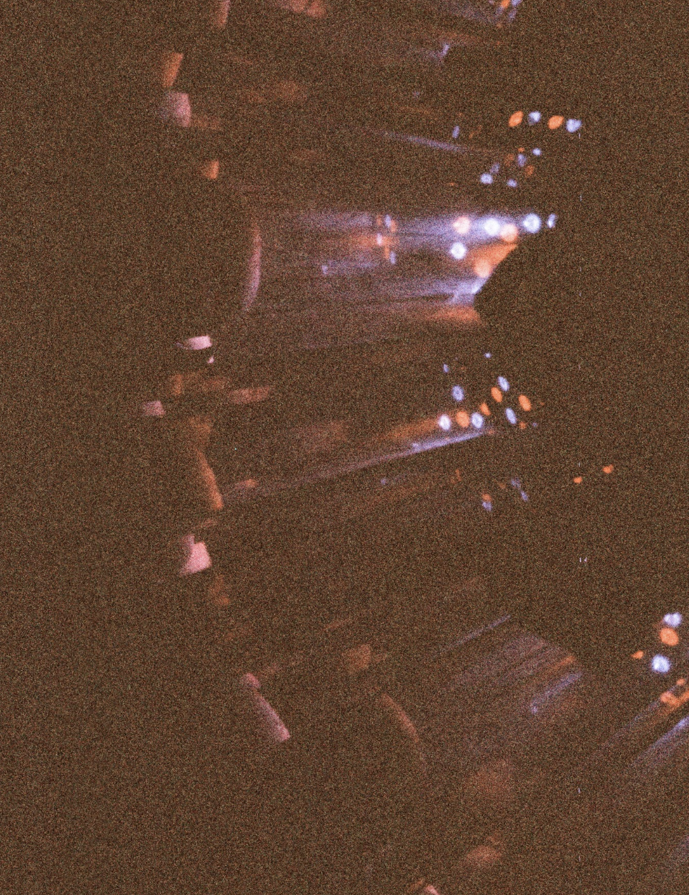

This melody will stop sooner than I thought.





In the Ganzfeld goggles, where the space is undefined and depth cannot be determined, after about 5-10 minutes, color is experienced as a sensation more than a distinguishable name. “Real” world references like “green like grass” fall away. The individual colors, in the Ganzfeld, begin to turn from being “blue”, “orange”, “red” to distinct sensations on the spectrum of illumination and darkness. When the colors quickly shift from one to another, the shift isn't visible. It is felt with the eyes. I flex between startled and provoked in these moments, and I'm not sure what the difference is between what elicits which response. The quick shift feels like an actual pulse of fervor, mimicking its transitions in my own body, starting at the center of my core and spreading equally to the ends of every limb and follicle. The sensation is strongest within my very eyes, though. The eyelids, whether or not they are open, are almost forgotten. Then I instinctively blink, become aware of the action, and snap back to being a transcriber, filing away reality.
Force software to calculate the decay of light over time.


The irreducibility of perceptual experience – the sensation ≠ the act.


In closing my eyes, I used a clean finger to wiggle the edge, and sought out where the lichtchaos occurred and how. I did not see honeycombs or latticework, but flickers of light and squiggles; phosphenes triggered by external stimulation... It remains unknown... This intimate visual field of light.
Light apparently doesn't just illuminate matter, it also magnetically influences it. But how? Is there a prioritization with what is influenced? How is matter influenced?



Infused solutions.
Noises, metal, shadows.